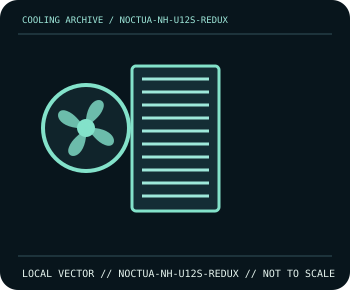

[ INDIVIDUAL COMPONENT // COOLING ]
Noctua NH-U12S redux
120 mm single-tower heatsink with four heatpipes and an NF-P12 redux-1700 PWM fan.

IDENTIFICATION: Confirm the complete model, revision, included mounting hardware, and host requirements against the manufacturer documentation before installation.
Manufacturer specifications
| Catalog subcategory | Tower and dual-tower air coolers |
|---|---|
| Exact model | Noctua NH-U12S redux |
| Heatsink | Four 6 mm heatpipes; nickel-plated copper base and aluminium fins. |
| Dimensions | 158 mm height; 125 mm width; 71 mm depth with fan. |
| Fan | NF-P12 redux-1700 PWM, 120 × 120 × 25 mm; 0–1700 rpm. |
| Socket and fit | Intel LGA1851/LGA1700/LGA1200/LGA115x and AMD AM5/AM4 mounting support; confirm included kit revision and RAM/case clearance. |
Compatibility and installation
Check the exact socket kit and case allowance for a 158 mm cooler. Seat the heatsink with the supplied mounting system, connect the fan to a 4-pin PWM header, and verify clearance around tall memory modules and the first PCIe slot.
- Disconnect system power before installation or rewiring, and follow the exact model manual.
- After assembly, confirm fan/pump operation and monitor temperatures before sustained workload.
Manufacturer source
- Noctua — NH-U12S redux specifications and compatibilityManufacturer product documentation; check the current model revision, package contents, and local socket kit before purchase or installation.
This static catalog entry is an identification aid, not a compatibility guarantee; fit and ratings can vary by revision, mounting kit, and host configuration.